The common acid or base-catalyzed mechanisms for ester hydrolysis, which proceed by way of a tetrahedral intermediate, have been classified as AAc2 and BAc2 respectively. This notation refers to the nature of the catalysis (acid or base), the C–O bond which is broken (acyl-oxygen or alkyl-oxygen) and the molecularity of the rate-determining step (kr), as summarized in the following diagram. Equations illustrating two uncommon acid-catalyzed mechanisms, AAl1 and AAc1, are shown at the bottom.
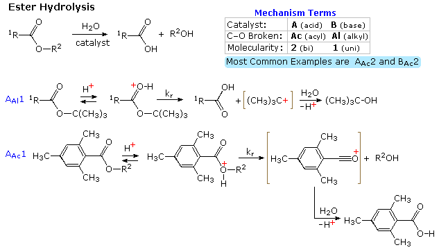
Simple ethyl and methyl esters may react with negatively charged nucleophiles in two ways.
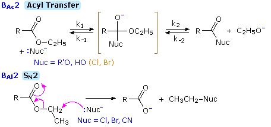
Base–catalyzed hydrolysis and ester exchange occur readily, in part because both the reacting nucleophile HO(–) or RO(–)) and the alkoxide leaving group have similar stabilities, and also because the tetrahedral anionic intermediate is formed relatively easily. In terms of the rate constants shown here, k–1 is comparable to k2, and k1/k–1 is not prohibitively small. On the other hand, good nucleophiles that are weak bases, such as Cl(–) and Br(–) will be essentially unreactive because k1/k–1 and k2/k–1 should be very small (<10–15), as estimated from pKa values.
The SN2 pathway requires a strong nucleophilic reactant, since carboxylate is not an exceptionally good leaving group. In polar aprotic solvents halide anions are an effective choice for cleaving methyl and ethyl esters, and alkali metal chloride and bromide salts dealkylate both methyl and ethyl esters in solvents such as DMSO, DMF and HMPTA. Furthermore, the influence of substituents on rates of SN2 reactions, allows selective cleavage of methyl esters compared with their ethyl counter parts. Thus, NaCN in HMPTA cleaves methyl esters in the presence of ethyl esters, and CH3CO2NH4 effects a similar conversion in hot DMSO.
This page is the property of The Edvibe Team. Comments, questions and errors should be sent to contact@edvibe.co.ke. These pages are provided to the IOCD to assist in capacity building in chemical education. 05/05/2013
Because enantiomers have identical physical and chemical properties in achiral environments, separation of the stereoisomeric components of a racemic mixture or racemate is normally not possible by the conventional techniques of distillation and crystallization. In some cases, however, the crystal habits of solid enantiomers and racemates permit the chemist (acting as a chiral resolving agent) to discriminate enantiomeric components of a mixture. As background for the following example, it is recommended that the section on crystal properties be reviewed.
Tartaric acid, its potassium salt known in antiquity as "tartar", has served as the locus of several landmark events in the history of stereochemistry.
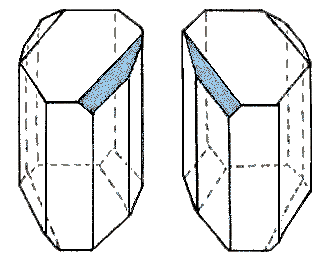
A fortuitous combination of many factors was responsible for Pasteur's success. His tedious method of resolution has seldom been repeated with other racemates, because the necessary crystal modification is relatively rare. Solid racemates may adopt three modifications as shown in the following phase diagrams. These three racemic modifications originate from differences in the way molecules pack together in a crystal lattice. In a racemic mixture, each enantiomer has a greater affinity for molecules of its own kind than for those of the other enantiomer. Consequently, the two enantiomers crystallize in a conglomerate of separate phases, and mixture melting points are depressed to a 50:50 eutectic point. In a racemic compound, the most common type of racemate, each enantiomer has a greater affinity for molecules of the opposite type than for its own kind. The crystal is thus composed of enantiomer pairs, distributed in an organized array and representing a true molecular compound. These racemic compounds have unique physical properties, including melting points, solubility, density and solid state spectra, different from that of either crystalline enantiomer. Finally, a rare racemate modification occurs when there is little affinity difference between enantiomeric molecules of like or opposite configuration, Here, the two enantiomers may be randomly distributed in the crystal, i.e. the racemic modification shows nearly ideal mixing and forms a solid solution or pseudoracemate of mixed crystals. At the 1:1 composition, this solid solution is a homogeneous one-phase solid containing equimolar amounts of the enantiomeric molecules. However, unlike a racemic compound, the solid state spectra are identical with that of the pure enantiomers. Of course, in solution or as a melt, pure enantiomers and racemates have the same properties.
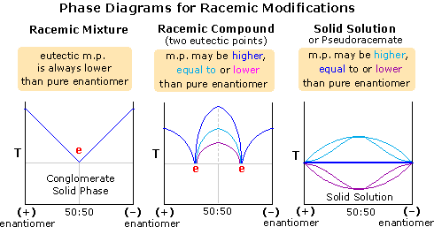
The tartaric acids and their salts serve to illustrate these distinctive states, as displayed in the above table. Racemic tartaric acid exists as a high melting, relatively insoluble racemic compound, as do many of its salts. An exception is the sodium ammonium salt, which crystallizes as a racemic mixture below 27.7 ºC, and as a racemic compound above that temperature. Pasteur was fortunate in his selection of this salt for observation, and in the conditions under which he prepared it. Data accumulated for a large number of crystalline racemates indicate that only 10% form conglomerate mixtures, and only a fraction of these exist as mixtures of dissymmetric crystals. A third tartaric acid isomer, originally called pyrotartaric acid and now known as meso-tartaric acid, is formed when (+)-tartaric acid is heated to 165 ºC , with about one-eighth its quantity of water, for about 2 hours. It is optically inactive and can not be resolved into (+)- and (–)-tartaric acids. Meso-tartaric acid is not found in nature.
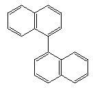
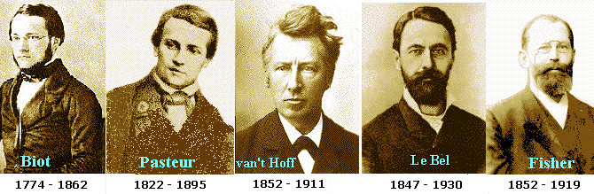
Pasteur's inspired reasoning concerning the structure and configuration of tartaric acid is clearly demonstrated by the following quotation from a 1861 lecture.
Pasteur was also the first to speculate that living organisms use and produce optically active compounds. When a racemic tartrate solution became contaminated with mold, he found the solution increased in optical activity with time. He concluded that the mold was consuming the dextrorotatory enantiomer, and that molecular asymmetry was inherent in the chemistry of life. Later, Pasteur was asked to investigate a problem associated with alcoholic fermentation. On finding that the fermenting solution contained optically active compounds, he concluded that fermentation was a biological process involving microorganisms. Facilitating the growth of desirable organisms and preventing the growth of undesirable organisms solved the problem. Today, Pasteur is best known for his work in the field of microbiology.
As noted earlier, the different physical properties of diastereomers renders them more easily separated than enantiomers. Thus, reaction of a racemate with an enantiomerically pure chiral reagent gives a mixture of diastereomers, which can then be separated. Reversing the first reaction then leads to the separated enantiomers plus the recovered reagent. Experience indicates that ionic salts are easily formed and crystallized. After separation of isomers, the acid & base components of the salt may be regenerated as separate compounds. An example is found in the resolution of (±)-tartaric acid by reaction with (–)cinchotoxine (structure below). The diastereomeric salts in the product mixture have such different water solubility that the (–):(+) component precipitates while the (+):(+)-diastereomer remains in solution. Once the salts are separated, the base may be dissolved in dilute acid, leaving behind the enantiomers of tartaric acid. The seven enantiopure bases shown here are examples of the many now available for the resolution of racemic acids
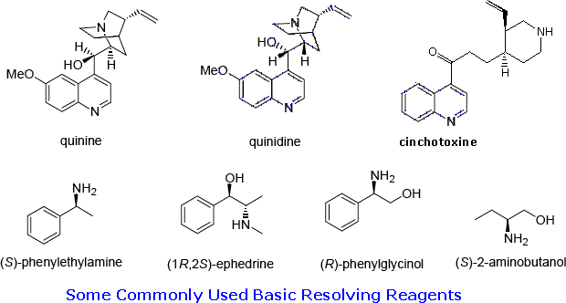
It should be clear that a similar tactic may be used to resolve racemic amines. Thus, an enantiopure acidic reagent will generate a mixture of diastereomeric salts. After separation, the resolving agent may be removed by extraction with base. Many such reagents are available, a few are shown here.
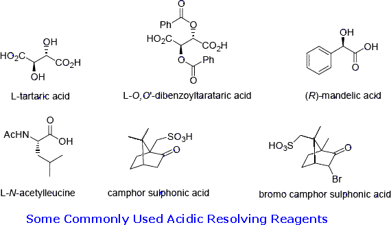
Resolution often produces a product substantially enriched in one enantiomer, but not to such a degree it may be considered pure. Furthermore, reactions exhibiting the stereoselectivity referred to as asymmetric induction generally yield enantiomerically enriched products, the composition of which needs to be determined. Analysis of these enantiomer mixtures requires diastereomeric interaction with appropriate chiral references. For example, gas phase or liquid chromatography employing columns having chiral stationary phases has proven very effective in separating and measuring enantiomeric components of a mixture. Likewise, the use of chiral shift reagents in nmr spectroscopy often provides similar information. A related technique involves the acylation of hydroxyl or amino functions with α-methoxy-α-(trifluoromethyl)phenylacetic acid (Mosher's Acid) derivatives, as shown in the following diagram.
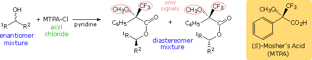
If a racemic acyl chloride is reacted with an enantiomerically pure alcohol, as shown in the following equation, a mixture of diastereomeric esters will be produced. These are formed via diastereomeric transition states, so the rate of reaction for each of the enantiomeric acyl chlorides will be different. If the rates are sufficiently different, one enantiomer may be completely transformed before the other begins to react, thus achieving a kinetic resolution. We define kinetic resolution as the partial or complete resolution of a racemate by virtue of unequal rates of reaction of the enantiomers with a chiral agent (reagent, catalyst, solvent etc.).
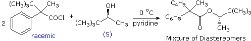
For kinetic resolution to be effective the faster rate, kf must be significantly larger than the slow rate, ks. If we define a selectivity factor s = kf / ks, it may be shown that to achieve perfect separation of enantiomers s must be greater than 200, a magnitude seldom achieved even for enzymatic reactions. For the reaction shown above s is probably no greater than 2, so it would represent a poor case for this technique.
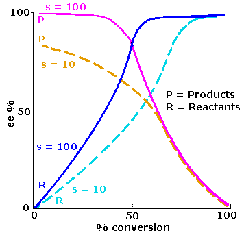
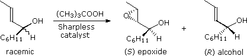
The selectivity factor for this reaction was estimated to be 140. Three other examples of kinetic resolution are shown in the following chart. The first case is interesting because a conventional diastereomer separation, using (+)-tartaric acid as the resolving agent, had been accomplished, but less efficiently. When acetone was used as a solvent, the unexpected formation of a 1,3-oxazinane derivative introduced a kinetic resolution component which improved the overall enantiomer separation.
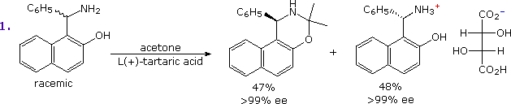
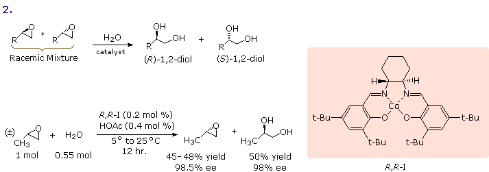
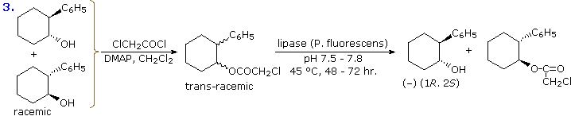
The second example makes use of one of the salen catalysts developed by Eric Jacobsen (Harvard). The cobalt version is shown in the shaded box. Manganese catalysts of this kind have been used to effect enantioselective epoxidation of allylic alcohols. The chiral nature of the catalyst is due to the (R,R)-1,2-diaminocyclohexane moiety (the S,S enantiomer may also be used). The example shown here accomplishes the hydrolysis of racemic propene oxide. A simple acid or base catalysis would give a racemic mixture of enantiomeric 1,2-diols. Any unreacted epoxide would also be racemic. The cobalt-salen catalyzed hydrolysis is highly enantioselective, giving close to the theoretical yield of both diol and recovered epoxide. A variety of other terminal epoxides have been similarly resolved. Finally, the last example illustrates the use of enzymes as reagents for organic transformations. Lipases act to hydrolyze esters, generally in an enantiospecific manner. Racemic trans-2-phenylcyclohexanol, prepared by reaction of phenyl lithium with cyclohexene oxide, is esterified by chloroacetyl chloride prior to lipase treatment. The (1R,2S)-ester is hydrolyzed selectively, leaving the (1S,2R)-enantiomer unchanged. After an easy separation, the latter ester may be hydrolyzed by aqueous base, to give the (+)-alcohol in good yield.
A novel application of kinetic resolution for determining of the absolute configuration of enantiomerically pure 2º-alcohols has been developed by the French Chemist Andre Horeau. The procedure is relatively simple and has proven reliable when applied to a variety of terpenes and other natural products. As shown in the following diagram, the alcohol is allowed to react with an excess of racemic α-phenylbutyric anhydride (actually a mixture of meso and (±)-anhydride). The excess anhydride is decomposed with water, and the α-phenylbutyric acid is isolated. Since the initial reaction with the chiral alcohol occurs with kinetic resolution, the recovered acid will be optically active, and the sign of its rotation reflects the configuration of the alcohol. If the alkyl substituents of the carbinol carbon are classified as small and large, and the alcohol configuration is that shown in the diagram (Fischer projection), the recovered acid will be levorotatory. As expected, alcohols having the mirror image configuration cause the recovered acid to be dextrorotatory. Since the specific rotation of enantiopure α-phenylbutyric acid is large, [α]D= ±96.5º, even a small enantiomeric excess is easily detected. The assignment of small and large to substituents will in some cases be arbitrary, limiting the general usefulness of the method.
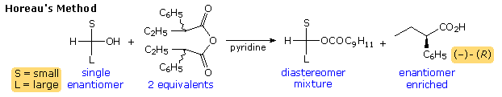
Not all possible kinetic resolution reaction systems exhibit the high selectivity factors (s > 120) characteristic of the above examples. A serious problem with this approach when s is smaller, is that the relative concentration of the less reactive enantiomer increases as the conversion proceeds, resulting in an increase in the effective rate for the unwanted transformation. Consequently, conversions must be kept well below 50% if product enrichment is desired, or well above 50$ for reactant enrichment. One way to remedy this difficulty is to conduct a simultaneous reaction that removes the unfavored enantiomer at the same time that the desired resolution is occurring. A simple example of this tactic is illustrated in the following diagram. The top equation shows the straightforward kinetic resolution of a racemic epoxide by enzymatic hydrolysis to an enantiomerically enriched diol. After 40% of the epoxide has undergone reaction, the product diol is obtained in 70% ee of the S-enantiomer. The bottom equation shows the effect of carrying out a simultaneous ring opening reaction with sodium azide during the same enzymatic resolution. SN2 reaction with azide anion takes place with both enantiomeric epoxides at the same rate, and as enzymatic hydrolysis removes the S-enantiomer, the relative rate of azide reaction with the R-enantiomer increases. After complete reaction, the (S)-diol is obtained in >90% ee.
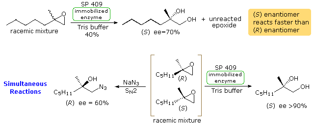
A true parallel kinetic resolution requires simultaneous kinetic resolutions using quasi-enantiomeric reagents or catalysts. An example in which two enantioselective Horner-Wadsworth-Emmons reagents are used will be displayed above by clicking on the diagram. Here, the enantiomeric components of a racemic aldehyde are selectively converted to different products by 0.5 molar equivalents of the reagents. The aldehyde enantiomers could be recovered by oxidative cleavage of the newly formed double bond, but this would be a rather inefficient means to that end. By clicking on the diagram a second time, another parallel reaction example will be shown. When ring opening of the racemic unsaturated epoxide by dimethyl zinc is catalyzed by the R,R,R form of catalyst X, one enantiomer reacts by an SN2' mechanism and the other by a direct SN2 pathway. The best example of a true parallel resolution is found in an esterification system developed by E. Vedejs (University of Michigan). It is particularly striking when considered with reference to the example posed at the beginning of this section. The amine catalyst DMAP is often used as an acyl transfer agent, as shown in the following equation.
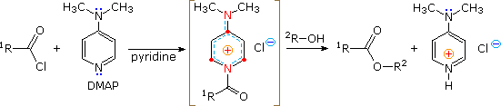
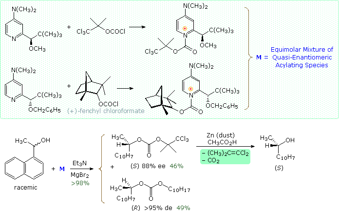
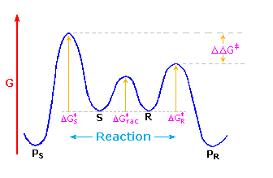
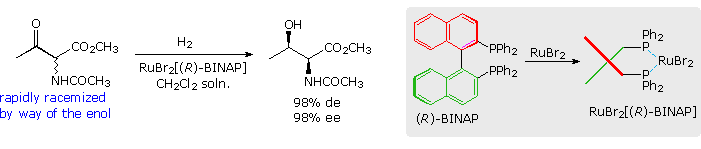
The second example provides an interesting case in which a simple kinetic resolution is rendered dynamic by a palladium catalyst. In the third example, the facile base-catalyzed enolization of an ester compared with its carboxylic acid is instrumental in the success of the resolution. Finally, the configurational lability of a Grignard reagent is largely confined, as a chiral nickel catalyst sets up a coupling reaction.